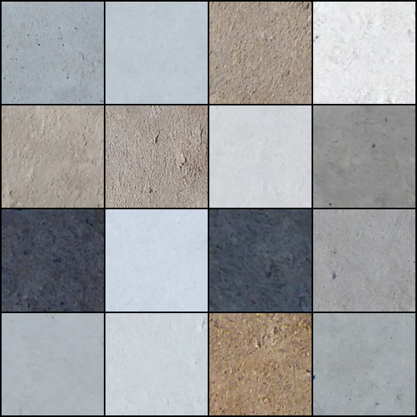

AIM
What this experiment was trying to learn
What output behavior is observed after increasing resolution and adding the RC cracked subset to binary conditional training?
TECH STACK
Implementation choices
PyTorch · conditional SmallUNet · 1,000 diffusion steps · AdamW · FP32/CUDA · RTX 4050
PROCEDURE
How it was run
Combine 50,482 SDNET training records with 10,519 local RC images assigned to the cracked class. Preserve source paths and annotation availability. Resize RGB images to 128 by 128, use the binary embedding and inverse-frequency sampler, and train for 50 logged epochs. Preserve the earlier stopped-generation record as historical context; use the later completed collection of 200 non-cracked and 200 cracked requests for this report. Analyse all 400 outputs using the 128-pixel heuristic, and calculate the separately scoped 160-image feature diagnostic from the saved evaluation protocol.
RESULT
What the evidence says
400 generated images evaluated. Requested-class agreement with the morphology heuristic: 64.25%. The detector has not been independently calibrated for this generated-image domain.
OBSERVATIONS
What appeared in the outputs
The saved matrix contains 155 agreements among 200 non-cracked requests and 102 among 200 cracked requests. Although these rates differ from Experiment 2, the detector window, thresholds, span criteria, image resolution, data composition and generated sample budget differ. The results support a descriptive observation, not a controlled claim that doubling resolution improved crack fidelity. Adding a named source also does not establish source independence: later content and perceptual audits link apparent aliases across collections.
ASSUMPTIONS
Decisions behind the result
Augmentation source: All local RC images are treated as cracked. All local JSON files contain crack-labeled rectangles, but independent image-level correctness remains unverified. Higher resolution: 128-pixel sampling can retain more visible detail. Pixel count is not a measurement of physical crack width or improved continuity. Dataset independence: A different source name supplies independent examples. Contradicted as a general rule by later cross-source alias candidates; v5 grouping addresses the declared similarity screen. Historical status: The stopped early run describes the final experiment state. Superseded by the later 400-image analysis; earlier status records remain archived.
ERRORS & SOURCES OF ERROR
What could mislead us
Geometry-based labels and detectors are proxies. Historical checkpoint exposure, small or unequal sample sizes, differing fidelity implementations and domain shifts limit interpretation. See the research audit for the corrected protocol.
CONCLUSION
Research takeaway
Experiment 3 provides a higher-resolution, augmented-data conditional checkpoint and a later 400-image descriptive evaluation. It motivates native-resolution morphology work, but it does not isolate the effect of resolution or establish independent external-dataset generalization.
RESULT IMAGES
Generated outputs


CURRENT EVALUATION ADDENDUM
Measured results and their limits
400 generated images evaluated. Requested-class agreement with the morphology heuristic: 64.25%. The detector has not been independently calibrated for this generated-image domain.
| Requested class | Images | Heuristic adherence / alignment |
|---|---|---|
| non cracked | 200 | 77.50% |
| cracked | 200 | 51.00% |
Inspect the metric record · Research protocol and readiness

Fidelity scores in historical reports used differing reference samples or implementations. They are not a controlled cross-experiment leaderboard. New clean training and independent validation remain outstanding.
Dataset source and annotation audit
The RC source audit found annotation geometry issues. The prospective Experiment 5/6 pipeline uses a conservative qualified subset; historical results are preserved. See the source audit for counts, attribution and limitations.
Inspect source quality and qualificationFULL REPORT CONTENT
Technical record
Current research report · Revised 22 November 2026. Methods, results, assumptions and validation limits are presented in full below.
Experiment 3 Research Report
Higher resolution binary conditioning with RC data augmentation
Revision: 2026-11-22. Study type: retrospective computational experiment. Historical checkpoint and saved evaluation; prospective validation is identified separately.
Abstract
Experiment 3 combines a 128-pixel conditional DDPM with a cracked-image subset labeled RC_10519, producing a historical training manifest of 61,001 images. Fifty logged epochs end at noise MSE 0.014058. The later saved evaluation contains 400 images, evenly divided between requested classes, with 64.25% overall heuristic agreement and 51.00% agreement for cracked requests. Resolution, training composition and sampling protocol change together, so the result is not an isolated estimate of a resolution benefit. The earlier closed-experiment statement that no metrics existed is superseded by this later descriptive evaluation.
1. Aim and research question
What output behavior is observed after increasing resolution and adding the RC cracked subset to binary conditional training?
Greater spatial sampling and additional cracked examples may retain finer visible detail. This historical experiment changes both factors together and cannot identify their separate causal effects.
2. Technical stack and model specification
| Item | Specification and provenance |
|---|---|
| Image shape | 128 by 128 RGB |
| Denoiser | SmallUNet |
| Checkpoint tensor parameters | 3,258,627 |
| Image / conditioning channels | 3 RGB + class embedding |
| Requested categories | 2 |
| Completed logged epochs | 50 |
| Final logged noise MSE | 0.014057592 |
| Minimum logged training MSE | 0.013812782 at local epoch 39 |
| Learning rate | 0.0002 (trainer source default; optimizer not saved) |
| Batch size provenance | Trainer default 8; historical command-line arguments not fully captured |
| Software | Python, PyTorch, torchvision, NumPy, Pillow, SciPy; Matplotlib and metric dependencies for evaluation |
| Optimizer | AdamW; beta values 0.9 and 0.999; weight decay 0.01 (saved optimizer where available, otherwise source defaults) |
| Gradient norm clipping | 1.0 in trainer source |
| Precision policy | Current historical trainer enables CUDA autocast and GradScaler; exact historical execution precision is not independently logged |
| Class dropout | Not used in the binary/unconditional source trainers |
| Sampling | 1,000-step ancestral DDPM for the shared pretrained reproduction path |
| Checkpoint selection | Released phase-final checkpoint; no independently held-out selection record |
| Augmentation | Image normalization; external data addition in Exp3, not a verified geometric augmentation benefit |
Epoch numbering in checkpoints is zero-based for Experiments 1–3 and one-based for the later phases; the training log is used to establish the completed phase length. A low training loss is not evidence of held-out generalization. Exact historical CUDA/PyTorch versions, CLI arguments and original peak resource measurements are not fully captured, so later environment checks are not substituted for historical runtime provenance.
3. Dataset composition and provenance
| Historical source | Training-manifest records |
|---|---|
| SDNET2018 | 50,482 |
| RC_10519 | 10,519 |
| Historical label | Records |
|---|---|
| non_cracked | 42,846 |
| cracked | 18,155 |
Total historical training records: 61,001. Source: train.csv. These are processed patches, not counts of independent structures or photographs. Labels for the morphology/mechanism-inspired experiments are derived by image-geometry rules. The historical train/reference design and transfer ancestry do not establish independent holdout performance. Source image identities, alias grouping and current qualified manifests are discussed in Section 10.
Dataset references: SDNET2018 [R6]; matching RC collection record [R9].
4. Mathematical and implementation basis
For normalized image $x_0$, the implemented forward process uses $T=1000$ and a linear variance schedule from $10^{-4}$ to $0.02$. With $\alpha_t=1-\beta_t$ and $\bar{\alpha}_t=\prod_{s=1}^{t}\alpha_s$:
$$x_t=\sqrt{\bar{\alpha}_t}x_0+\sqrt{1-\bar{\alpha}_t}\epsilon,\qquad \epsilon\sim\mathcal{N}(0,I).$$
The denoiser minimizes noise-prediction mean squared error (the expression suppresses constant normalization by the number of image elements):
$$\mathcal{L}=\mathbb{E}_{x_0,t,\epsilon}\left[\lVert\epsilon-\epsilon_\theta(x_t,t,c)\rVert_2^2\right].$$
The condition $c$ is omitted for the unconditional model. This objective is implemented in the diffusion and training modules and follows the DDPM formulation [R1]. Training MSE is an optimization diagnostic, not a perceptual, topology or physical-validity score.
5. Experimental procedure
- Combine 50,482 SDNET training records with 10,519 local RC images assigned to the cracked class. Preserve source paths and annotation availability.
- Resize RGB images to 128 by 128, use the binary embedding and inverse-frequency sampler, and train for 50 logged epochs.
- Preserve the earlier stopped-generation record as historical context; use the later completed collection of 200 non-cracked and 200 cracked requests for this report.
- Analyse all 400 outputs using the 128-pixel heuristic, and calculate the separately scoped 160-image feature diagnostic from the saved evaluation protocol.
These steps reconstruct the procedure supported by saved artifacts and current source. Defaults are distinguished from observed checkpoint/log values; a missing historical execution configuration is not silently reconstructed as a verified run command.
6. Evaluation protocol and statistical interpretation
The primary morphology source is src/evaluate_exp1_2_3_errors.py. At 128 pixels it applies local-background subtraction with window 17, darkness threshold 15.0, minimum component area 12 pixels and nominal span threshold 22 pixels. The 128-pixel path additionally applies a 2 by 2 opening. Component counts, image-axis orientation and local contrast are detector outputs, not physical measurements.
The later fidelity diagnostic uses torchvision Inception-v3 with its classifier removed, 299-pixel resizing and ImageNet normalization. It selects training-manifest references: 160 real and 160 generated images for the stored score. KID uses 100 subsets of up to 128 feature vectors and a cubic polynomial kernel. This custom feature/preprocessing protocol is not interchangeable with a standard torch-fidelity run or the earlier torchmetrics feature-64 scores. The KID standard deviation describes subset variability, not a confidence interval over independent training runs.
Wilson 95% intervals summarize binomial counting uncertainty conditional on the saved generator and heuristic. They do not include training-seed variability, detector bias, source clustering or uncertainty about real mechanisms. Precision, recall and F1 computed against requested conditions quantify heuristic correspondence, not human-labeled classification accuracy. Pixel distances are in image coordinates; no physical millimetre scale is available.
For $k$ accepted outputs among $n$ requests, $\hat p=k/n$ and $z=1.95996$. The Wilson interval is
$$\frac{\hat p+z^2/(2n)\ \pm\ z\sqrt{\hat p(1-\hat p)/n+z^2/(4n^2)}}{1+z^2/n}.$$
For saved count matrix $A$, $A_{ij}$ counts request $i$ assigned heuristic class $j$. Row agreement is $A_{ii}/\sum_j A_{ij}$; proxy precision is $A_{ii}/\sum_j A_{ji}$; $F_1=2PR/(P+R)$, with zero used for undefined zero-denominator cases. These definitions explain the table without changing the meaning of requested labels into ground truth.
7. Results
Overall requested-label agreement: 257 / 400 (64.25%). The following intervals are calculated from the saved counts; precision and F1 also use these counts rather than rounded JSON rates.
| Requested class | Diagonal / requested | Agreement | Wilson 95% interval | Proxy precision | Proxy F1 |
|---|---|---|---|---|---|
| non_cracked | 155 / 200 | 77.50% | 71.23–82.74% | 61.26% | 0.6843 |
| cracked | 102 / 200 | 51.00% | 44.12–57.84% | 69.39% | 0.5879 |
Confusion counts, with requested classes in rows and heuristic-assigned classes in columns:
| Requested / assigned | non_cracked | cracked |
|---|---|---|
| non_cracked | 155 | 45 |
| cracked | 98 | 102 |
Protocol-qualified feature diagnostic
| Saved metric | Value |
|---|---|
| frechet_inception_distance | 94.114 |
| kernel_inception_distance_mean | 0.03294 |
| kernel_inception_distance_std | 0.00188 |
| evaluated_fake_samples | 160 |
| evaluated_real_samples | 160 |
FID and KID summarize feature distributions [R4, R5]; they do not certify crack presence or physical validity. Reference exposure, sample count, feature extraction and image preprocessing are part of the metric definition. Do not rank this value against experiments using another implementation or a different reference distribution.
Saved plots and generated examples
Figure interpretation: phase-local training loss, detector-defined rates and saved sample counts. This figure is a descriptive summary, not a controlled leaderboard or an independently labeled accuracy assessment.
Archived illustrative outputs
The following saved illustrations retain their available filenames and request labels. Their membership in the quantified collection is not assumed without an original sampling manifest. They are not a blinded quality study, and their labels are not independent human judgments. The quantitative tables retain the complete stated evaluation denominators.
Cracked samples. Source illustration: exp3_cracked.png.
Non-cracked samples. Source illustration: exp3_noncracked.png.
8. Observations and discussion
The saved matrix contains 155 agreements among 200 non-cracked requests and 102 among 200 cracked requests. Although these rates differ from Experiment 2, the detector window, thresholds, span criteria, image resolution, data composition and generated sample budget differ. The results support a descriptive observation, not a controlled claim that doubling resolution improved crack fidelity. Adding a named source also does not establish source independence: later content and perceptual audits link apparent aliases across collections.
This experiment changes several design factors relative to other phases. Resolution, training images, label taxonomy, transfer ancestry, color processing, sampler and evaluator may differ. A before/after visual comparison is therefore hypothesis-generating; no causal attribution to a single architectural or conditioning change is made.
9. Assumptions and their consequences
| Assumption | Implementation or rationale | Consequence and validation status |
|---|---|---|
| Augmentation source | All local RC images are treated as cracked. | All local JSON files contain crack-labeled rectangles, but independent image-level correctness remains unverified. |
| Higher resolution | 128-pixel sampling can retain more visible detail. | Pixel count is not a measurement of physical crack width or improved continuity. |
| Dataset independence | A different source name supplies independent examples. | Contradicted as a general rule by later cross-source alias candidates; v5 grouping addresses the declared similarity screen. |
| Historical status | The stopped early run describes the final experiment state. | Superseded by the later 400-image analysis; earlier status records remain archived. |
All image-derived labels assume that visible dark geometry is informative about the intended visual attribute. Real masks, bounding boxes and class labels answer different annotation questions. Additional annotations or a mechanics-inspired name do not independently verify a failure mechanism.
10. Completed audits and prospective validation
The prospective research_v5 manifests contain the following base partition counts. They were constructed after the historical training and do not retroactively make its checkpoints unseen-data models.
| Partition | Base records |
|---|---|
| train | 48,088 |
| validation | 6,898 |
| test | 6,015 |
The shared source audit covers 67,264 originals, with 65,866 distinct decoded RGB images and 1,398 extra exact decoded copies. The v4 perceptual screen found 386 cross-split candidates. V5 conservatively links all 1,111 candidate pairs, including within-split pairs, before assignment; the same pHash ≤3 and dHash ≤6 search then finds zero cross-split candidates. This limited, uncalibrated screen can miss crops, rotations, flips and larger edits. Source names and zero screened matches do not prove site or structure independence.
RC attribution identifies a matching Mendeley record [R9] and its requested paper [R10]. Local ZIP sizes/CRCs match extracted files, but no publisher digest established local archive identity. All 10,519 local JSON files contain crack rectangles; these boxes do not validate image-level labels, pixel masks or structural mechanisms. The geometry audit flags 1,145 source annotations, including 1,122 out-of-bounds cases and 150 image/annotation dimension mismatches; categories overlap.
Scratch training, EMA selection on fixed-noise validation, provenance-checked generation and geometry/fidelity preflight are implemented for the new lineage. Their bounded smoke runs are infrastructure checks. Full clean multi-seed training, independently labeled generated images, external validation and downstream detector utility have not been established by the historical artifacts. A prepared campaign is not a completed experiment.
Computational sharing was tested in a fresh Windows/Python 3.10 CPU environment: the public weights were downloaded and verified and one image per experiment was generated without raw datasets. This confirms that inference can execute under that environment; it does not reproduce model training or validate image quality.
11. Sources of error and errors identified
| Identified issue | Correction or interpretation |
|---|---|
| No metrics claimed after a later evaluation existed | Report the 400-image analysis and its dates/status separately from the earlier closure. |
| RC described as independently new data without qualification | Matching publisher attribution is available; payload identity and acquisition independence are not fully verified. |
| Improvement attributed solely to resolution | Resolution, composition and detector protocol are confounded. |
Further threats include segmentation sensitivity to texture and illumination; source overlap and patch clustering; heuristic circularity between curation and evaluation; small or unequal sample budgets; image-derived versus procedurally generated conditioning; reference preprocessing differences; and incomplete historical execution metadata. No structural safety, real crack width, downstream detection benefit, state-of-the-art performance or physical-cause accuracy is claimed from these measurements.
12. Conclusion
Experiment 3 provides a higher-resolution, augmented-data conditional checkpoint and a later 400-image descriptive evaluation. It motivates native-resolution morphology work, but it does not isolate the effect of resolution or establish independent external-dataset generalization.
13. Reproducibility and artifact record
The released historical weights are used for inference; these commands do not start training. Run from the repository root with the documented dependencies and a fresh output directory.
.\.venv\Scripts\python.exe pipeline/download_models.py
.\.venv\Scripts\python.exe pipeline/checkpoints.py verify
.\.venv\Scripts\python.exe pipeline/generate_cracks.py --experiment 3 --crack-type cracked --count 1 --seed 2026 --output-dir experiments/conditional_ddpm_128_augmented/report_replication_seed2026
A fixed seed requires matching checkpoints, sampling settings, device and software for comparable execution; it does not guarantee cross-device pixel identity or exact replication of a historical example grid. Research training uses a separate scratch lineage and must not overwrite these final weights.
| Evidence | Artifact |
|---|---|
| Primary metric record | EVALUATION_METRICS.json |
| Training log | conditional_128_augmented_training_loss.csv |
| Checkpoint SHA256 | f6c3e5ffd855e53cb5a9e2b6f77db5630d96db27dd6b0a37e26555f127f41252 |
| Input hashes and revision archive | report_evidence.json |
| Training source | train_conditional_128_augmented.py |
| Evaluation source | evaluate_exp1_2_3_errors.py |
Code is available in the project repository. The six historical checkpoints are distributed in the versioned model release, with a checksum manifest. Raw datasets are not included in that inference bundle. Dataset references identify their publishers, while local source inventories record observed archive hashes and outstanding identity/annotation limitations.
The machine-readable evidence file records input SHA256 values, checkpoint metadata, log handling and exact archived pre-revision sources. The historical reports remain recoverable and are superseded where their claims conflict with the corrected tables above. Original sampling files do not provide a complete checkpoint-hash chain for every historical evaluation image; association with the released phase checkpoint follows the available procedural record. Counts, Wilson intervals and derived matrix statistics are calculated from saved artifacts.
Verified saved-image reproduction
On 22 November 2026, the morphology/spatial analysis was rerun on all saved evaluation images for this experiment in two fresh directories (saved-analysis-20261122-v2 and saved-analysis-20261122-v3). All 49 compared numeric baseline fields matched with absolute tolerance 0.0001 and zero relative tolerance; the two fresh metric JSON records were identical in the same local environment. Per-image row counts, input/output SHA256 values and preservation of the original metrics were verified. Across all six experiments, each run analysed 4,992 images. Fidelity and the manually authored Exp4 comparison block were explicitly excluded, so this does not reproduce historical FID/KID, establish independent accuracy, or execute new sampling or training.
.\.venv\Scripts\python.exe pipeline/reproduce_results.py --run-id my-exp3-review --experiments 3
The command refuses existing run folders and fails on missing historical inputs. Raw evaluation images and physics masks are retained locally and excluded from ordinary Git; Exp1–3 also require their recorded processed-image reference subset. A Git clone alone is sufficient for report evidence verification and published-weight inference, but does not contain every saved-image input. Read the reproduction guide and folder map.
| Verified reproduction | Record |
|---|---|
| Summary | saved_analysis_reproduction.json |
| saved-analysis-20261122-v2 | run_manifest.json |
| saved-analysis-20261122-v3 | run_manifest.json |
14. References
[R1] Ho, Jain and Abbeel (2020). Denoising Diffusion Probabilistic Models. Source
[R4] Heusel et al. (2017). FID proposal in GANs Trained by a Two Time-Scale Update Rule Converge to a Local Nash Equilibrium. Source
[R5] Bińkowski et al. (2018). Demystifying MMD GANs; KID proposal. Source
[R6] SDNET2018 dataset and acquisition documentation. Source
[R9] Wang (2026). Reinforced concrete structure crack detection dataset 10519, Mendeley Data v1. DOI 10.17632/3ghxck2wd5.1. Source
[R10] Wang et al. (2024). Automatic detection of building surface cracks using UAV and deep learning-combined approach. Structural Concrete 25(4), 2302–2322. Source
Archival report: the earlier interpretation may contain superseded claims. The current research report takes precedence.
Read the earlier archived technical record
Experiment 3 - 128x128 Conditional Augmented DDPM Report Page 1 Experiment 3 Report 128x128 Conditional DDPM with Additional Cracked Data This report documents Experiment 3. It increases image resolution from 64 x 64 to 128 x 128 and augments SDNET2018 with an external cracked reinforced-concrete image dataset. Formal FID/KID/LPIPS evaluation is pending and is intentionally not reported here. Item Value Dataset SDNET2018 + external RC_10519 cracked images Task 128x128 binary conditional concrete image generation Conditions class 0 = non_cracked, class 1 = cracked Resolution 128 x 128 RGB Model Conditional SmallUNet/DDPM Epochs 50 Diffusion steps 1000 Final checkpoint experiments\conditional_ddpm_128_augmented\checkpoints\conditional_128_a ugmented_epoch_050.pt Final training loss 0.014057591692068844
Experiment 3 - 128x128 Conditional Augmented DDPM Report Page 2 1. Aim and Motivation Experiment 2 introduced crack-status conditioning, but it still generated 64 x 64 images from SDNET2018 only. Experiment 3 was designed to preserve more crack detail by moving to 128 x 128 resolution and adding an independent cracked-concrete dataset. Increase output resolution from 64 x 64 to 128 x 128. Keep binary class conditioning for cracked and non-cracked generation. Add 10,519 external cracked reinforced-concrete images. Improve visible crack detail compared with lower-resolution experiments. Avoid using the Kaggle 800-image SDNET-derived crack dataset to reduce leakage risk. 2. Dataset Structure 2.1 Dataset Sources Source Images used Label policy Role SDNET2018 50,482 training images cracked and non_cracked labels from SDNET2018 folder structure Base concrete dataset RC_10519 10,519 images all used as cracked Additional independent cracked-concrete data 2.2 Combined Training Composition Component Count SDNET2018 non-cracked 42,846 SDNET2018 cracked 7,636 External cracked RC_10519 10,519 Total 61,001 2.3 External Dataset Record Item Value Downloaded archive D:\Downloads\Reinforced concrete structure crack detection data.zip Preserved raw path data\raw\external_cracks\Reinforced concrete structure crack detection data Image folder images, 10,519 JPG files Annotation folder label_json, 5,512 LabelMe JSON files Annotation note Some images do not have JSON annotations, so annotation_available was preserved as metadata. 2.4 Dataset Decision The Kaggle 800-image crack segmentation dataset was not used because its data card states that it was selected from SDNET2018. Adding it to SDNET2018 could introduce duplication or train/test leakage. The external RC_10519 dataset was used instead as the additional cracked source.
Experiment 3 - 128x128 Conditional Augmented DDPM Report Page 3 3. Preprocessing Procedure The preprocessing script src/prepare_experiment3_128.py created a new 128 x 128 processed training set under data/processed_128. It reused the SDNET2018 training split and appended external cracked images. Step What was done Why it was necessary Source integration SDNET2018 train.csv records and external JPG files were combined. Creates one training CSV for the augmented experiment. Metadata preservation source, original_path, surface, label, annotation_available, width, and height were written. Keeps provenance and annotation availability traceable. RGB conversion Every image was converted to RGB. Ensures consistent 3-channel model input. Resize Every image was resized to 128 x 128 using LANCZOS. Allows 128 x 128 training while preserving more detail than 64 x 64. Stable naming Processed filenames used SHA1 hashes based on source and original path. Avoids collisions between SDNET2018 and external filenames. Normalization during loading ToTensor maps [0,255] to [0,1], then Normalize(0.5,0.5) maps to [-1,1]. Matches diffusion training scale. raw image -> RGB -> resize_128x128_LANCZOS -> PNG uint8 pixel p in [0,255] ToTensor: p -> p / 255 in [0,1] Normalize(mean=0.5, std=0.5): x_0 = 2 * (p / 255) - 1 in [-1,1] 4. Conditional DDPM Theory The model keeps the binary conditioning mechanism from Experiment 2. A class embedding is added to the timestep embedding so the denoising network receives both diffusion time and desired crack status.
Experiment 3 - 128x128 Conditional Augmented DDPM Report Page 4 5. Experimental Procedure Orde r Step Output 1 Prepare 128 x 128 augmented training data data\processed_128\train.csv 2 Preserve SDNET2018 and RC_10519 source metadata source and original_path fields 3 Assign labels SDNET2018 labels plus RC_10519 as cracked 4 Use weighted random sampler balanced cracked/non-cracked training batches 5 Train conditional SmallUNet/DDPM for 50 epochs checkpoints\conditional_128_augmented_epoch_ 050.pt 6 Generate 16-image reference grids outputs\reference_128 7 Stop incomplete large cracked generation at 32 images outputs\evaluation\conditional_128_augmented_c racked 8 Defer full FID/KID/LPIPS evaluation pending complete generated sets 5.1 Training Configuration Item Value Training script src\train_conditional_128_augmented.py Batch size 16 recorded in STATUS.md Optimizer AdamW, learning rate 2e-4 Epochs 50 Diffusion steps 1000 Mixed precision CUDA AMP enabled when CUDA is available Gradient clipping clip_grad_norm = 1.0 GPU NVIDIA GeForce RTX 4050 Laptop GPU Final training loss 0.014057591692068844 6. Training Result Training completed successfully for 50 epochs. The final checkpoint exists and should be treated as the completed Experiment 3 model. Formal image-distribution metrics have not yet been computed because the large generation run was intentionally stopped early. Artifact Path / value Final checkpoint checkpoints\conditional_128_augmented\conditional_128_augmented _epoch_050.pt Training log outputs\logs\conditional_128_augmented_training_loss.csv Final loss 0.014057591692068844 Partial generated cracked images 32 images only, not sufficient for final evaluation
Experiment 3 - 128x128 Conditional Augmented DDPM Report Page 5 7. Reference Generated Images The following reference grids contain 16 generated images per class from epoch 50. These are visual references only. They are not a substitute for large-scale FID/KID/LPIPS evaluation. Cracked-condition 128 x 128 reference grid, 16 generated images. Non-cracked-condition 128 x 128 reference grid, 16 generated images.
Experiment 3 - 128x128 Conditional Augmented DDPM Report Page 6 8. Evaluation Status Formal evaluation metrics are intentionally omitted from this report because the full generated evaluation sets do not exist yet. The large cracked generation run was stopped after 32 images, and those partial images must not be used for final FID/KID/LPIPS reporting. No final FID is reported. No final KID is reported. No final LPIPS is reported. No final crack-presence rate is reported. A full evaluation requires complete generated sets, ideally 1,000 images per class, followed by the same metric procedure used in Experiments 1 and 2. 9. Observations and Limitations The cracked reference grid shows visible crack-like patterns in several samples. The non-cracked reference grid mostly shows texture-only concrete surfaces. The 128 x 128 resolution preserves more visual detail than 64 x 64 outputs. External cracked-only augmentation may bias the cracked condition and must be evaluated carefully. External dataset overlap and annotation inconsistency remain risks. The model should not be claimed superior until complete evaluation is performed. 10. Conclusion Experiment 3 successfully completed dataset preparation and training for a 128 x 128 conditional DDPM using SDNET2018 plus 10,519 external cracked reinforced-concrete images. It is the strongest visual-resolution experiment so far, but its formal quality metrics remain pending. The correct current conclusion is that the model is trained and visually inspectable, not fully evaluated. 11. Recommended Next Steps Generate complete 1,000-image cracked and non-cracked evaluation sets. Run FID, KID, and LPIPS against the same real validation comparison protocol. Create manual visual audit sheets for 128 x 128 cracked and non-cracked outputs. Compare visual crack clarity against Experiment 2 after full evaluation is complete.